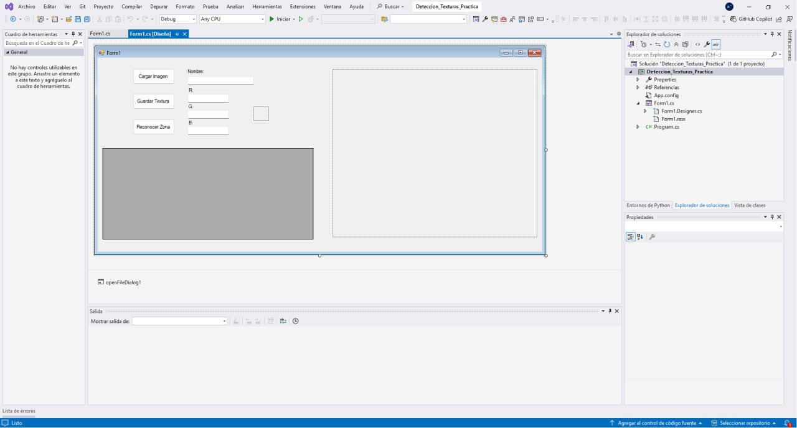
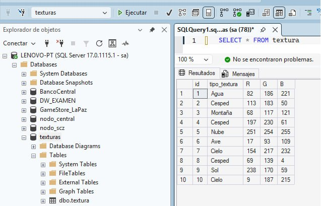
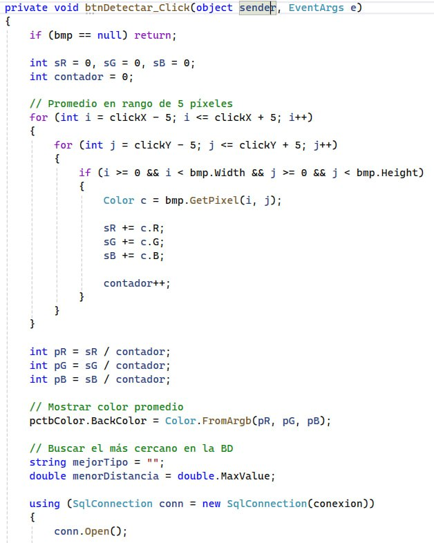
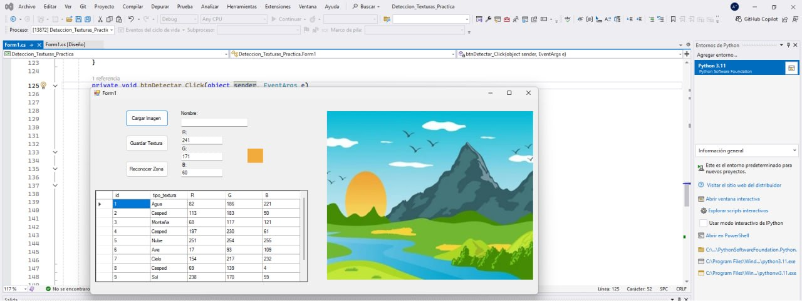

Análisis del comportamiento del software: desde la carga dinámica del mapa de bits mediante OpenFileDialog hasta el cálculo de vecindades cromáticas y su clasificación espacial en el DBMS mediante vectores euclidianos.

Entorno C#: winforms_interfaz.pngDiseño del formulario interactivo en Windows Forms. Incorpora un control de exploración de archivos nativo filtrado para formatos estandarizados (.jpg, .png), un lienzo de previsualización pctbImagen, un visor de contraste dinámico para el color promedio seleccionado (pctbColor) y un grid de auditoría de persistencia enlazado al inicializar el ciclo de vida del componente.

Base de Datos: sql_tabla.pngEsquema de la entidad textura dentro del catálogo de datos texturas. Almacena las firmas cromáticas mediante el registro indexado del descriptor de la muestra (tipo_textura) y tres campos enteros normalizados destinados a resguardar las magnitudes discretas de los canales R, G y B.

Lógica: algoritmo_distancia.pngA diferencia de los enfoques puntuales aislados, el sistema ejecuta un doble bucle iterativo que examina una matriz de proximidad de 5x5 píxeles alrededor de la coordenada del cursor. Este proceso extrae un promedio ponderado de los canales RGB, mitigando el ruido digital de la imagen y estabilizando el patrón de la textura analizada.

Persistencia: datagrid_actualizado.pngSincronización del entorno mediante una arquitectura desconectada con SqlDataAdapter y DataTable. La persistencia implementa consultas parametrizadas robustas que inmunizan el canal de datos contra vulnerabilidades de inyección de código, refrescando de manera reactiva el búfer de la interfaz gráfica tras cada confirmación transaccional.
Dado que este módulo requiere una conexión activa a un servidor relacional con seguridad integrada de Windows (Trusted_Connection), la ejecución en tiempo real desde la capa web está deshabilitada por aislamiento de red. A continuación, se expone el bloque de código fuente C# estructurado por el autor para este propósito:
using System;
using System.Collections.Generic;
using System.ComponentModel;
using System.Data;
using System.Data.SqlClient;
using System.Drawing;
using System.Linq;
using System.Text;
using System.Threading.Tasks;
using System.Windows.Forms;
namespace Deteccion_Texturas_Practica
{
public partial class Form1 : Form
{
Bitmap bmp;
int clickX, clickY;
string conexion = "Server=localhost;Database=texturas;Trusted_Connection=True;";
public Form1()
{
InitializeComponent();
CargarDatos();
}
// Carga interactiva del mapa de bits con filtros explícitos
private void btnCargarImagen_Click(object sender, EventArgs e)
{
openFileDialog1.Filter = "Archivos JPG|*.jpg|Archivos PNG|*.png";
openFileDialog1.ShowDialog();
bmp = new Bitmap(openFileDialog1.FileName);
pctbImagen.Image = bmp;
}
// Transformación lineal de coordenadas y mapeo del píxel real
private void pctbImagen_MouseClick(object sender, MouseEventArgs e)
{
if (bmp == null) return;
float scaleX = (float)bmp.Width / pctbImagen.Width;
float scaleY = (float)bmp.Height / pctbImagen.Height;
int x = (int)(e.X * scaleX);
int y = (int)(e.Y * scaleY);
if (x >= 0 && x < bmp.Width && y >= 0 && y < bmp.Height)
{
Color c = bmp.GetPixel(x, y);
txtR.Text = c.R.ToString();
txtG.Text = c.G.ToString();
txtB.Text = c.B.ToString();
pctbColor.BackColor = c;
}
clickX = x;
clickY = y;
}
// Inserción transaccional parametrizada contra Inyección SQL
private void btnGuardarImagen_Click(object sender, EventArgs e)
{
if (string.IsNullOrWhiteSpace(txtNombre.Text))
{
MessageBox.Show("Ingresa el tipo de textura");
return;
}
try
{
using (SqlConnection conn = new SqlConnection(conexion))
{
conn.Open();
string query = "INSERT INTO textura (tipo_textura, R, G, B) VALUES (@tipo, @r, @g, @b)";
using (SqlCommand cmd = new SqlCommand(query, conn))
{
cmd.Parameters.AddWithValue("@tipo", txtNombre.Text);
cmd.Parameters.AddWithValue("@r", int.Parse(txtR.Text));
cmd.Parameters.AddWithValue("@g", int.Parse(txtG.Text));
cmd.Parameters.AddWithValue("@b", int.Parse(txtB.Text));
cmd.ExecuteNonQuery();
}
}
MessageBox.Show("Textura guardada correctamente");
CargarDatos();
}
catch (Exception ex)
{
MessageBox.Show("Error: " + ex.Message);
}
}
// Recuperación de registros mediante arquitectura desconectada
private void CargarDatos()
{
try
{
using (SqlConnection conn = new SqlConnection(conexion))
{
conn.Open();
string query = "SELECT * FROM textura";
SqlDataAdapter da = new SqlDataAdapter(query, conn);
DataTable dt = new DataTable();
da.Fill(dt);
dataGridView1.DataSource = dt;
}
}
catch (Exception ex)
{
MessageBox.Show("Error al cargar datos: " + ex.Message);
}
}
// Clasificador Espacial basado en Distancia Euclídea de Color Promedio
private void btnDetectar_Click(object sender, EventArgs e)
{
if (bmp == null) return;
int sR = 0, sG = 0, sB = 0;
int contador = 0;
// Procesamiento Convolucional (Entorno Matriz 5x5)
for (int i = clickX - 5; i <= clickX + 5; i++)
{
for (int j = clickY - 5; j <= clickY + 5; j++)
{
if (i >= 0 && i < bmp.Width && j >= 0 && j < bmp.Height)
{
Color c = bmp.GetPixel(i, j);
sR += c.R;
sG += c.G;
sB += c.B;
contador++;
}
}
}
int pR = sR / contador;
int pG = sG / contador;
int pB = sB / contador;
pctbColor.BackColor = Color.FromArgb(pR, pG, pB);
string mejorTipo = "";
double menorDistancia = double.MaxValue;
using (SqlConnection conn = new SqlConnection(conexion))
{
conn.Open();
string query = "SELECT tipo_textura, R, G, B FROM textura";
using (SqlCommand cmd = new SqlCommand(query, conn))
using (SqlDataReader dr = cmd.ExecuteReader())
{
while (dr.Read())
{
int r = dr.GetInt32(1);
int g = dr.GetInt32(2);
int b = dr.GetInt32(3);
// Métrica Geométrica Euclídea de tres componentes
double distancia = Math.Sqrt(
Math.Pow(pR - r, 2) +
Math.Pow(pG - g, 2) +
Math.Pow(pB - b, 2)
);
if (distancia < menorDistancia)
{
menorDistancia = distancia;
mejorTipo = dr.GetString(0);
}
}
}
}
MessageBox.Show("Textura detectada: " + mejorTipo);
}
}
}